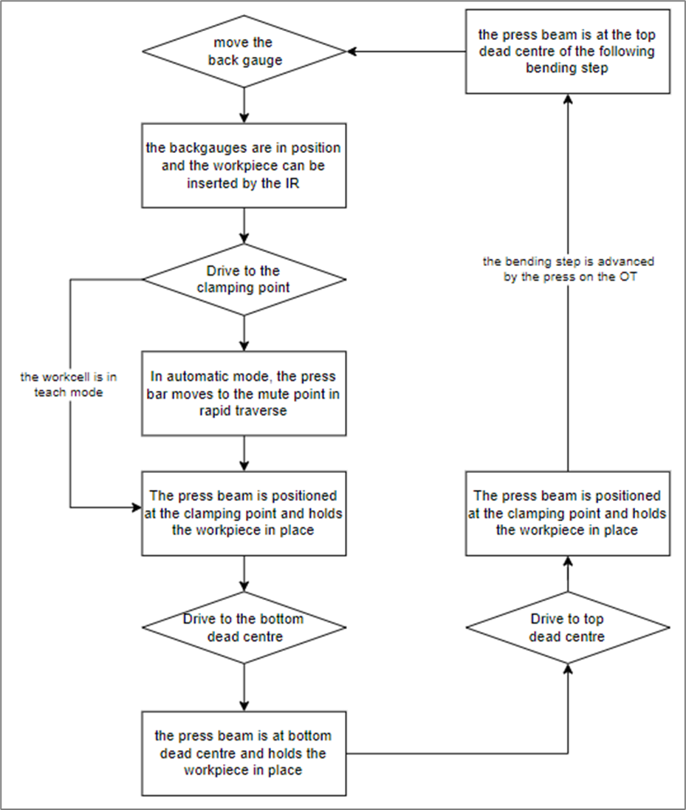
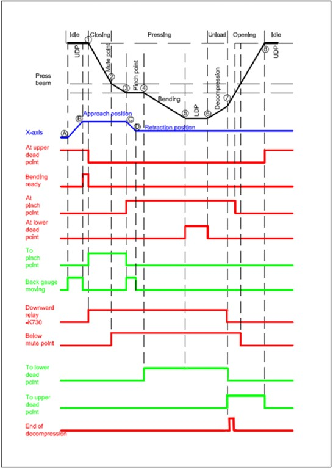
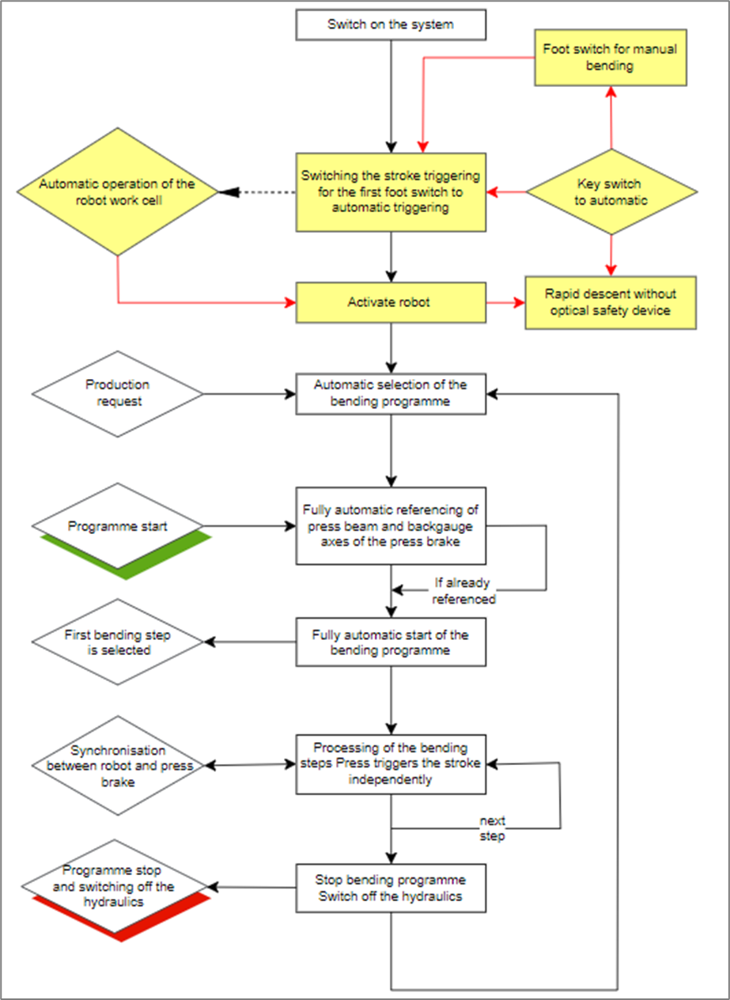

Signal Course In Robot Mode
General
|
Signal course
The following figure describes a complete bending cycle in robot mode:

At the start of a bending step, the press beam stands still at the upper dead point 1 and is opened sufficiently. The robot now sets the signal "Move backgauges" to step change. All backgauge axes move from A to B into the programmed stop position. Once both gauge fingers have been successfully positioned B, the press brake sets the output "Press brake ready". Now the robot can pass the sheet between the lower and the upper tool and stop it at the gauge fingers. Both gauge finger switches are now assessed exclusively by the robot.
The robot now sets the signal "To clamping point" and "Permit downward movement" so that the press brake moves in automatic mode using rapid downward speed to the mute point 2 and then on in press operation to the clamping point 3. In addition, the To upper dead point signal must be reset by the robot, otherwise the press brake will not perform a downward movement. This measure prevents an unwanted run-through of the bending program, if the robot were to set all press brake inputs. The press brake sets the signal "At clamping point" in clamping point 3. The output signal "Press brake ready" is withdrawn by the press brake on leaving the upper dead point 1 since the opening of the press beam is now too small to be able to place the sheet blank into the press brake. The robot gripper would otherwise collide with the press beam.
If the rapid downward travel, i.e. the rapid downward movement of the press beam, is not enabled because the work cell is in teach mode, the press beam moves down the entire length from the upper dead point as far as the clamping point at 10mm/s.
If the contact pairs 3ab Rapid downward movement without optical safety device are bridged and the input signal Automatic mode is set, the press beam can travel quickly downward in rapid traverse as far as the mute point without any monitoring by an optical safety device.
The "To clamping point" signal must always remain set during this movement, otherwise the press brake will immediately stop. The press brake sets the signal At clamping point in the clamping point and has therefore reached 3. The press beam maintains its position here, so that the sheet cannot slip out and the robot can release the sheet for regripping. In addition, the backgauges retract in positive X direction from C to D to the withdraw position.
If the signal To lower dead point is set by the robot at 4 at the press brake clamping point, the press brake moves at working speed to the lower dead point 5 and then bends the sheet to the desired angle. Here, the robot must track alongside if necessary, or release the workpiece from the gripper. The input signal To lower dead point must always remain set during this travel from 4 to 5 or the press brake will stop immediately. The press brake then sets the output signal To lower dead point. This signal is withdrawn again once the lower dead point at 6 is rear.
To ensure that the press beam discharges the sheet by decompression at the lower dead point and then moves upward fully using rapid upward movement, the robot must set the signal To upper dead point. In addition, the Approach clamping point signal must be reset by the robot, otherwise the press brake will not move up. This measure prevents an unwanted run-through of the bending program, if the robot were to set all press brake inputs.
Once the press brake has reached the end of the discharge or decompression at 7, End decompression is set. If To upper dead point is reset, the press beam also stops during the upward movement. The press beam moves at rapid up speed to the next upper dead point 8. The cycle then starts once again.
| Start Signal (XS7:14) have to set to High. |
Signal course between a TruBend and a robot:

Optimized bending program management between a TruBend and a robot:

Program for the industrial robot
A program example containing comments for an industrial robot which is exchanging signals with a press brake control is shown below.
Signal sequence
With the following signal sequence, the robot interface can also be put into operation manually. If all inputs are set, the press brake stops during the bending step. This prevents the bending program from simply running on.
Preparation
-
Bridge the contact pairs 1ab at pins 39 and 40 and 2ab at pins 41 and 42 to close the two channel Emergency Stop circuit.
-
Bridge the contact pairs 4ab at pins 4 and 28 and 4ac at pins 4 and 29 so that the press beam moves downward.
-
Bridge the contact pair 3ab at pins 30 and 31 to enable a rapid downward movement in rapid traverse.
-
Set the two inputs 6 and 21 at pins 13 and 16 so that the press brake is notified that the robot is in automatic mode and has released the downward movement of the press beam.
Signal sequence for a bending step
-
Set input 11 at pin 20 to move the backgauge axes into position.
-
Set input 22 at pin 17 so that the press beam moves to the clamping point.
-
Set input 23 at pin 18 so that the press beam moves to the lower dead point.
-
Set input 24 at pin 19 and reset inputs 11, 22 and 23 so that the press beam moves to the upper dead point.
The appropriate input must remain set until the corresponding action has been completed.
Minimizing the interface
If inputs of the press brake are bridged and outputs of the press brake are not queried in the robot program, the flexibility and safety of the interface are naturally reduced.
Pins 17 and 18 can be bridged in order to execute the bend fully immediately after the workpiece has been clamped by the press beam.
Pins 19 and 20 can be bridged in order to move the press beam to the upper dead point and then immediately afterward position the backgauges for the next bend.